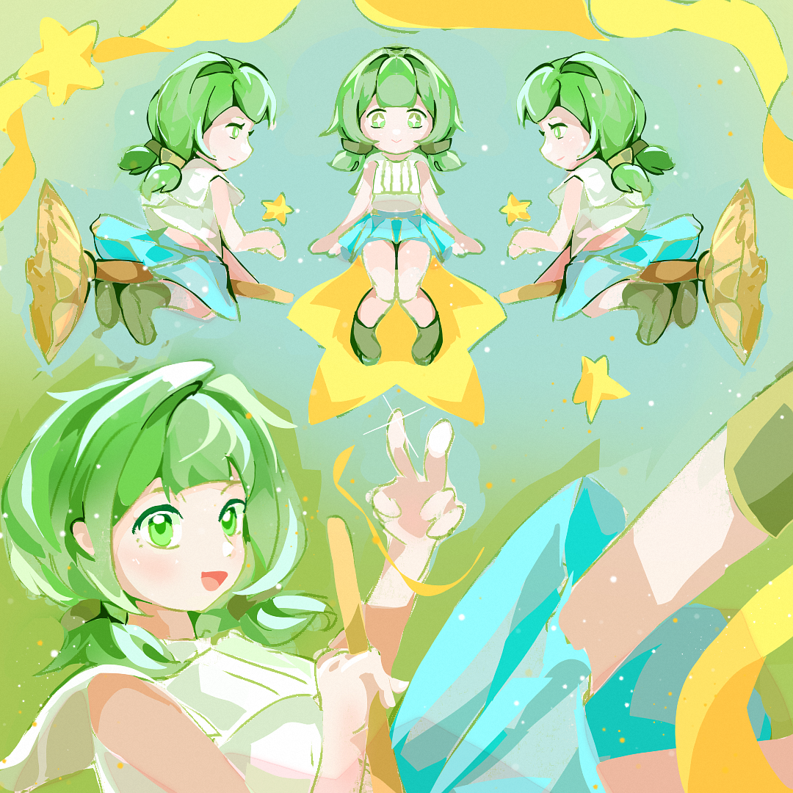

横屏双轨跑酷 × 弹幕Boss 战 × 肉鸽成长
用「一根手指两个键」，撑起一套完整的 Build 构筑体验
《魔女试炼》是一款单人、横屏、像素风的休闲动作游戏。玩家扮演一名见习魔女，只用 上/ 下键 在双轨之间穿行、躲避障碍、收集试炼值；随着收集不断进化形态、三选一构筑 Buff；攒够目标后选择武器，进入 弹幕 Boss 战 决战。它把「跑酷的即时手感」和「肉鸽的一局一变」缝合在同一段体验里。
喜欢《喵斯快跑》《几何冲刺》的休闲玩家 + 想要「构筑成长」的轻度肉鸽用户。碎片时间可玩，单局 2–4 分钟。
跑酷段的「心流走位」与 Boss 段的「弹幕爽快输出」交替，用最低操作门槛承载最丰富的成长决策。
Web（HTML5），PC 键盘 + 手机触屏双适配，960×540 视口、零安装、静态可部署。
单纯跑酷缺「目标感」，玩家跑久了会腻；单纯弹幕战门槛高、劝退休闲用户。把二者串成「跑酷收集 → 构筑变强 → Boss 验证成长」的节奏，让每一局都有明确的爬坡与高潮，同时把学习成本压到「两个键」。
主角的成长即游戏的成长线——她收集的「星星」是玩法里的试炼值，外观进化对应四段形态成长。设定与系统深度绑定，让「养成一个角色」和「玩法变强」是同一件事。

森林魔女学院的见习生，元气活泼、乐观好动，比起念书更爱追流星。她并非天赋型魔女，魔力总差临门一脚，被评为「勉强及格」——但她相信只要收集到足够的星光，就能证明自己。五段试炼，是学院的毕业考，也是她与自我怀疑的对峙。
亮绿→青绿渐变蓬松短发、双侧发带小辫；翠绿大眼、雀斑腮红；星光白绿短上衣 + 青蓝渐变短裙 + 绿靴；随身金色发光扫帚。
好奇、莽撞又坚韧，不服输。目标单纯——集齐星光、通过试炼、成为真正的魔女。轻量剧情靠她的第一人称元气旁白推进，不打断节奏。
| 设定项 | 内容 |
|---|---|
| 姓名 | 叶林 |
| 身份 | 森林魔女学院 · 见习魔女 |
| 动机 | 集齐星光、通过试炼、成为真正的魔女 |
| 法器 | 会发光的金色扫帚（终极形态可骑乘） |
| 口头禅 | 「深呼吸……我准备好了！」 |
四段形态进化 = 叶林的成长可视化：水手服少女 → 见习魔女 → 进阶魔女 → 扫帚魔女(终极)。她收集的「魔法星星」就是试炼值，骑扫帚形态正是设定图里的终极姿态——美术、剧情、数值三线合一。
所有玩法与数值决策都围绕这三条展开，遇到取舍时以支柱优先级为准。
操作只有「上 / 下」，但每次三选一 Buff、武器选择、走位取舍都是有意义的决策。门槛低，天花板高。
形态肉眼进化（换装 +拖尾）、收集物翻倍、Buff 叠层，让「我在变强」这件事随时可感知。
跑酷（收集/积累）→ Boss（宣泄/验证）的张弛交替，每局都有清晰的爬坡与高潮，避免平铺直叙。
一局游戏的完整节奏：跑酷收集与构筑在前，Boss 战验证在后，胜利解锁下一关，形成稳定的心流回路。
跑酷阶段本身是一个高频反馈循环：躲障碍 → 吃收集物 → 试炼值累积 → 每满 2500 触发一次三选一。玩家平均每十几秒就做一次构筑决策，保证注意力持续在线。
这一段是「积累」环节，玩家在双轨间切换躲避障碍、拾取收集物，为Boss 战攒试炼值、堆构筑。
| 输入 | PC | 手机 | 效果 |
|---|---|---|---|
| 切上轨 | ↑ / W | 点上半屏 | 角色插值移动到上轨（laneSwitchLerp=20，干脆利落） |
| 切下轨 | ↓ / S | 点下半屏 | 同上，切轨伴随挤压拉伸 + 拖尾 |
切轨挤压拉伸、残影拖尾、吃收集物粒子爆发、撞击屏震（shakeOnHit=6）与顿帧（hitStop=0.12s）。这些反馈不改变数值，但极大提升「操作爽感」，是休闲品类留存的关键。
基础收集物，+50 试炼值。出现频率高，构成积累主体。
高价值收集物，+100 试炼值，出现概率约 30–36%（随关卡递增）。鼓励玩家为高价值物切轨冒险。
撞障碍不直接死亡，而是扣 20 试炼值 + 0.55s 僵直 + 0.9s 无敌保护。理由：跑酷肉鸽的乐趣在「构筑与推进」，一撞就死会让长局积累付诸东流、挫败感过强，休闲用户流失。改为「拖慢进度」既保留了操作压力，又不粉碎单局投入。
这是肉鸽「构筑」的核心。形态是被动的视觉/里程碑成长，Buff 是主动构筑，武器决定 Boss 战输出手感——三者共同组成「一局一变」的Build。
累计试炼值达到阈值即自动进化，外观明显变化，给玩家「肉眼可见的变强」正反馈。
| 形态 | 阈值（累计试炼值） | 视觉特征 |
|---|---|---|
| 水手服少女 | 0 | 初始形态，深蓝水手服 |
| 见习魔女 | 2500 | 获得尖顶帽 + 紫色斗篷 |
| 见习魔女·进阶 | 6000 | 斗篷进化，描边更亮 |
| 扫帚魔女 终极 | 12000 | 骑上扫帚、金色描边、星空紫 |
所有关卡的通关目标 goalTrial ≥ 12000，确保玩家一定先进化到终极形态，才会进入 Boss 战。形态进化线与关卡节奏被刻意对齐，让「变身完成」正好成为进入高潮战斗的仪式感。
每累积 2500 试炼值触发一次三选一，可重复叠层（stacks）。构成本局的成长方向。
冲撞击碎障碍不受伤，每层减少僵直。
收集物价值 ×2，可叠加 ×3 ×4…
受伤减半，每层再减，扣血更少。
自动吸附邻近收集物，每层范围更大。
得分速率提升，每层 +15% 距离分。
收集物出现率提升，每层 +12%。
三选一允许抽到已拥有的 Buff，从而支持「专精叠层流」（如双倍魔力叠满滚雪球）与「铺开流」两种构筑路线，增加 build 多样性与重开动机。
进入 Boss 战前选择武器，决定这场弹幕战的输出方式。可通过商城解锁更多武器。
| 武器 | 模式 | 伤害 | 射击间隔 | 弹速 | 定位 |
|---|---|---|---|---|---|
| ✦ 星辉法杖 | 单发直线 | 2 | 0.10s | 420 | 极速连射，稳定基础 |
| ✷ 群星散射 | 三向扇形 | 2 | 0.20s | 400 | 覆盖广，容错高 |
| ➤ 月光贯穿 | 穿透光束 | 4 | 0.30s | 640 | 高爆发，命中即重创 |
| ★ 追踪飞星 | 自动追踪 | 2 | 0.16s | 340 | 免瞄准，专注走位 |
跑酷积累的终点。玩家纵向走位躲弹幕、持续输出，收集六芒星触发狂暴，击败 Boss 即通关。每个 Boss 有独立弹幕形态与移动方式。
| 关卡 | Boss | 血量 | 移动方式 | 弹幕形态 | 目标时长 |
|---|---|---|---|---|---|
| 1迷雾森林 | 邪恶蘑菇 | 460 | 上下摇摆 | 扇形喷射 + 瞄准弹 | ~30s |
| 2毒沼藤林 | 邪恶藤蔓 | 540 | 上下摇摆 | 波浪弹 + 瞄准弹 | ~35s |
| 3 水晶洞窟 | 水晶魔像 | 620 | 追踪玩家 Y | 环形弹 + 瞄准弹 | ~40s |
| 4 幽灵城堡 | 幽灵领主 | 700 | 瞬移 | 螺旋弹 + 瞄准弹 | ~45s |
| 5 月蚀祭坛 | 月蚀魔女最终 | 800 | 高速摇摆 | 环形 + 螺旋 + 瞄准三重 | ~50s |
难度不靠堆弹量恐吓休闲玩家，而是靠「弹幕种类逐关叠加 + 移动方式变复杂」制造新鲜感：从固定摇摆（好预判）→ 追踪 / 瞬移（要临场反应）→ 最终三种弹幕齐发。血量按「玩家有效 DPS 约 12–16、至少撑住 30 秒」反推，确保每场都打得到、打得爽，又不会秒杀。
战斗中收集六芒星，攒满触发狂暴输出窗口，给玩家「主动创造爆发」的操作空间，也是 Boss 战的节奏调味料。
扇形 spread / 波浪 wave / 环形 ring / 螺旋 spiral / 瞄准 aimed，数据化配置，新增 Boss 只需组合 patterns 数组。
5 个关卡各有独立主题配色、剧情 Intro 与 Boss。难度通过「速度倍率 + 通关目标 + Boss 强度」三条曲线协同递增。
| 关卡 | 主题 | 速度倍率 | 通关目标(试炼值) | 药水概率 | 通关奖励 |
|---|---|---|---|---|---|
| Lv.1 | 迷雾森林 · 见习魔女的第一课 | 1.00× | 12000 | 30% | 💰 30 |
| Lv.2 | 毒沼藤林 · 缠绕的恶意 | 1.12× | 13500 | 30% | 💰 45 |
| Lv.3 | 水晶洞窟 · 回响的低语 | 1.24× | 15000 | 32% | 💰 60 |
| Lv.4 | 幽灵城堡 · 不眠的宿敌 | 1.36× | 16500 | 34% | 💰 80 |
| Lv.5 | 月蚀祭坛 · 最终试炼 | 1.50× | 18000 | 36% | 💰 150 |
速度线性 +0.12×/关，提升操作压力；目标试炼值阶梯递增（+1500 起、逐步加大），拉长后期单局；药水概率微涨补偿难度，避免后期因障碍变密而收集受挫；奖励末关跳变到 150，强化「打通全流程」的成就与经济激励。三条曲线错峰递增，避免难度断层。
通关五关后的核心留存内容。流程与普通关一致，但每轮 Boss 随机、目标递增、属性无限叠加，追求「你能撑到第几轮」。
每轮从 5 个 Boss 中随机抽取，配色主题也随机切换，保证每轮画面与挑战都新鲜。
第 1 轮 12000，之后每轮 +3000；速度每轮 +0.12×（封顶 2.2×），难度平滑爬升。
Buff / 收集度 / 试炼值跨轮累加不清零，玩家越滚越强，与递增难度赛跑，形成滚雪球张力。
5 关是有限内容，通关即流失。无限模式用「随机 + 无限叠加 + 排行心态（撑到第几轮）」把内容寿命拉长到近乎无限，是低成本、高留存的经典手法。同时它只累加金币、不影响关卡解锁，与主线进度解耦，避免破坏正常曲线。
金币是唯一软通货，来源清晰、去向明确，围绕「外观养成+ 武器解锁」构建长期目标。
使用 localStorage 持久化：金币、最高分、已购/已装备皮肤、关卡解锁进度。零登录、即开即玩。皮肤系统数据驱动——新增皮肤只需往skins.js 数组加一条配置，商城自动展示，运营可低成本持续投放新内容维持活跃。
作为策划最看重的能力：把「手感」翻译成可调参数，让调优可复现、可快速迭代。全部核心手感/难度数值集中在单一配置文件 config.js。
| 参数 | 值 | 作用 |
|---|---|---|
| startSpeed / maxSpeed | 140 → 340 | 滚动速度区间，决定基础操作压力 |
| accel | 6/s | 速度爬升斜率，控制单局难度上扬节奏 |
| spawnStart → spawnMin | 1.05s → 0.5s | 障碍生成间隔收窄，制造后期密度压力 |
| orbChance | 0.42 | 收集物 / 障碍比例，平衡「爽」与「险」 |
| trialPerLevel | 2500 | 三选一触发频率，决定构筑决策密度 |
| hitPenalty / stunTime | 20 / 0.55s | 受伤代价，惩罚强度的调节旋钮 |
① 先定体验目标（如「Boss 战至少 30 秒」）；② 反推关键数值（玩家 DPS × 目标时长 = 血量）；③ 参数集中收口到 config，改一处即时生效；④ 三条难度曲线（速度 / 目标 / Boss）错峰递增避免断层。这套「目标 → 反推 → 收口 → 曲线」流程可复用到任何数值模块。
原生 HTML5 Canvas + ES Modules 自研引擎，零构建依赖。数据与逻辑分离，便于策划独立调整内容。
关卡 / Boss / 武器 / Buff / 形态 / 皮肤全部拆成独立数据文件。加内容 = 加一条配置，不碰逻辑代码：
levels.js 关卡 + 无限模式生成器bosses.js Boss 弹幕 patternsweapons.js / buffs.js / witchForms.js 成长三件套config.js 全局手感参数自研游戏循环（dt 上限、场景栈）+ 整数放大像素渲染管线。场景清晰分层：
GitHub 仓库：github.com/muyuxuanzhi/witch-trial（自研引擎、可直接部署静态站点在线试玩）。
本作由纯跑酷原型「霓虹疾跑」演进而来，逐步长成带成长与战斗的完整肉鸽——这个过程本身就是一次「找乐趣」的设计迭代。
① 先做最小可玩核心再叠系统：手感没打磨好之前不堆内容；② 用数据驱动换迭代速度：把内容和逻辑解耦，让「调数值 / 加关卡」变成分钟级操作；③ 为不同玩家留出路径：休闲玩家靠通关正反馈，硬核玩家靠无限模式与专精 build——同一套系统服务两类人。